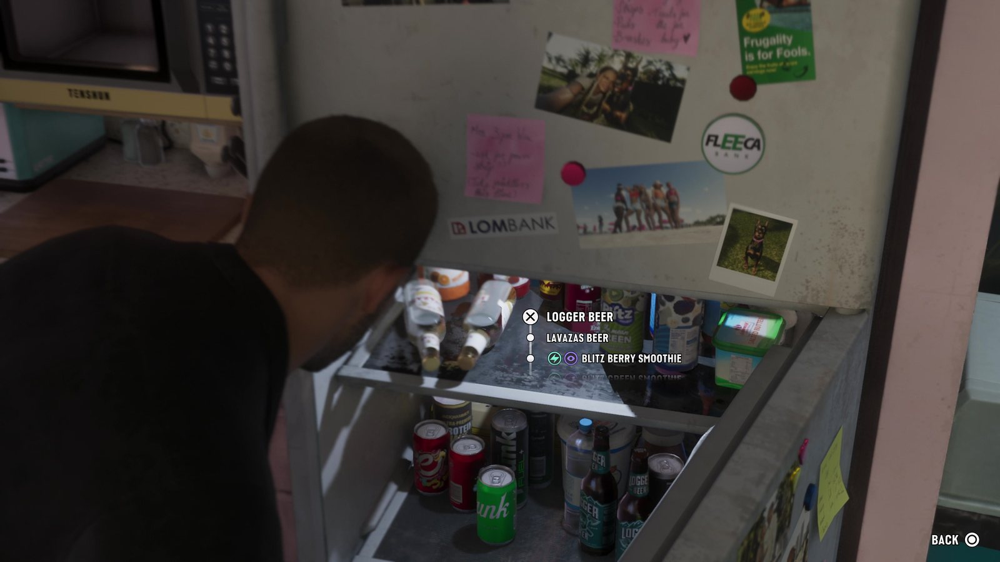
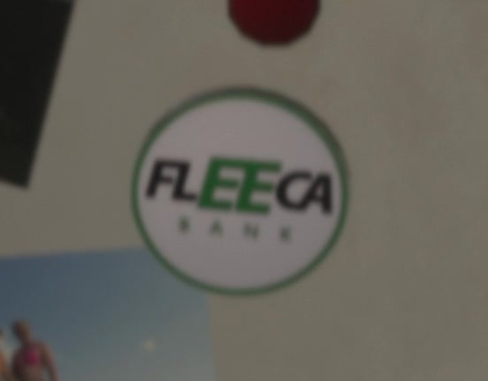
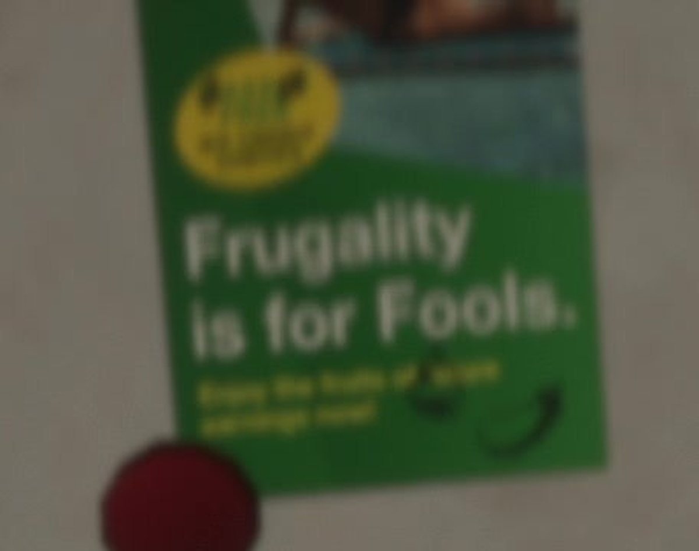
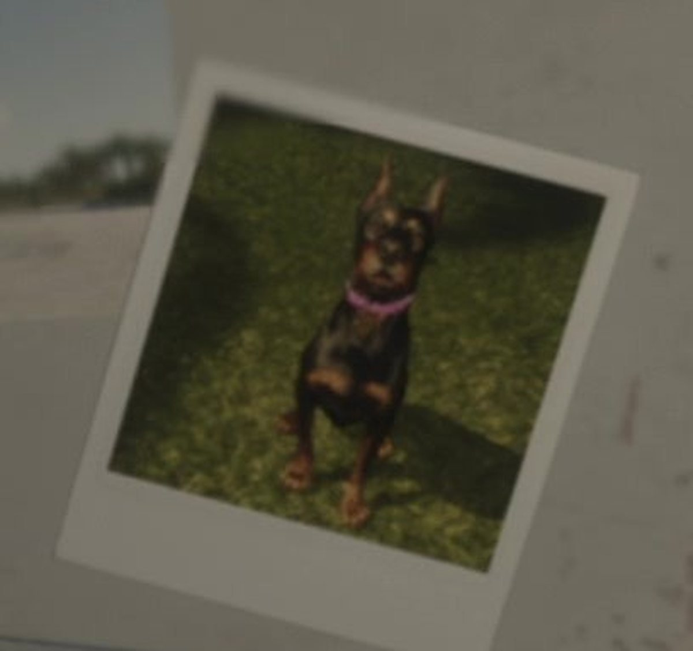
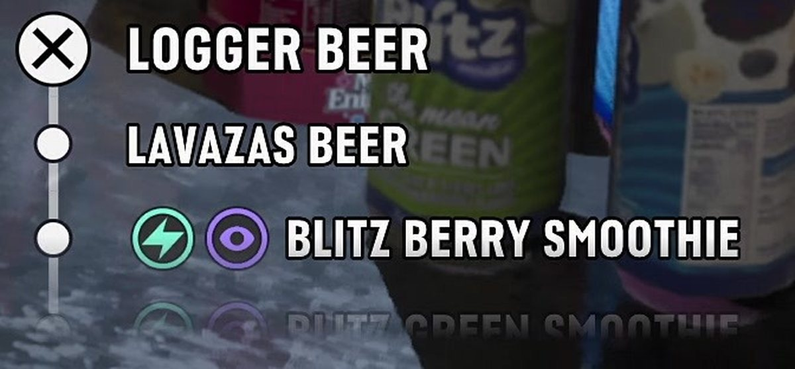
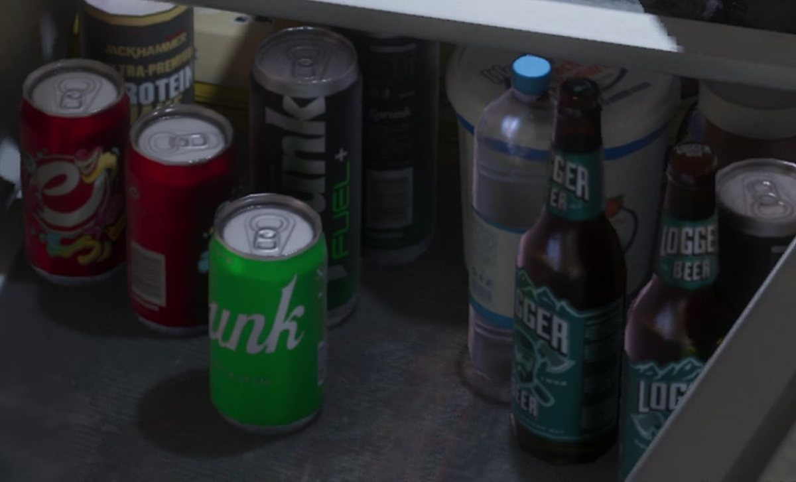

Разбор кадра: что лежит в холодильнике в Вайс-Сити
Обновлено:

- Кадр из официального «Расширенного показа», отметка 07:18.
- На дверце — банки из GTA 5: Fleeca и Lombank.
- Холодильник — интерактивный: открывается меню напитков.
- Всё, что не читается однозначно, помечено как догадка.
Сцена
Розовая кухня в Вайс-Сити, за окном жара. Ты открываешь холодильник, и оттуда тянет холодом. Пиво, смузи, энергетики, на дверце — фотографии чужой жизни и магниты банков. Одна кнопка — и ты уже пьёшь «Logger» прямо из бутылки.
В GTA 5 холодильник был просто мебелью. В GTA 6 это отдельное действие с меню, а заодно — маленький музей вселенной. Разберём, что Rockstar положила в один кадр.
Кадр целиком
Нажмите на номер, чтобы перейти к фрагменту.
6 деталей

1 Магнит Fleeca Bank
Круглый магнит с логотипом Fleeca Bank. Этот банк знаком всем, кто играл в GTA 5 и GTA Online: его отделения стояли по всему Лос-Сантосу, а «Ограбление Fleeca» открывало серию ограблений в GTA Online. Теперь Fleeca добрался и до Леониды — по крайней мере, до чьего-то холодильника.
2 Наклейка Lombank
Чуть ниже — наклейка Lombank. Ещё один банк из GTA 5: в Лос-Сантосе был даже небоскрёб Lombank West. Два банка из прошлой части на одной дверце холодильника — похоже, вселенная GTA 6 прямо продолжает мир GTA 5, а не начинает с нуля.

3 «Frugality is for Fools»
Зелёный рекламный магнит с надписью «Frugality is for Fools» — «Бережливость — для дураков». Фирменная сатира Rockstar на культуру потребления в одной строчке. Чей это слоган, на магните мелко написано ниже, но в кадре не читается.

4 Полароид с собакой
Снимок-полароид с маленькой собакой на траве. Рядом — ещё две фотографии: селфи двух девушек и компания на пляже. Хозяин квартиры в кадре не показан, но по этим фото ясно: у него (или у неё) есть друзья, пляж и питомец. Rockstar рассказывает о персонаже через вещи, а не через диалоги.

5 Меню напитков
Самая игровая деталь: при открытом холодильнике появляется меню — Logger Beer, Lavazas Beer, Blitz Berry Smoothie и следующий пункт, «Blitz Green Smoothie». У смузи рядом значки — молния и глаз, как на полосках интерфейса. Наша догадка: напитки влияют на показатели героя. Как еда и напитки меняют тело героя, мы писали в статье Новые механики GTA 6: что изменилось.

6 Нижняя полка
Внизу — банки и бутылки: коричневые бутылки Logger (пиво, знакомое по GTA 4 и GTA 5), красные банки, чёрная банка энергетика и зелёная банка с надписью «…unk». Похоже на Sprunk — фирменную газировку серии, но край надписи закрыт, так что это наша догадка.
Микроволновка слева подписана Tenshun. Rockstar почти никогда не ставит в кадр реальные бренды: всё — от банков до пива — пародии или собственные марки. Так студия избегает лицензий и заодно шутит: Fleeca — созвучно с английским fleece («обдирать»), Logger — «лесоруб», пиво для «настоящих мужиков».
Что мы узнали
- Банки Fleeca и Lombank из GTA 5 существуют и в Леониде — это та же вселенная.
- Холодильник интерактивный: у напитков есть меню.
- У некоторых напитков значки, похожие на показатели героя (наша догадка).
- Квартира «рассказывает» о хозяине через фото и вещи.
Где этот кадр в видео — «Расширенный показ» GTA 6: что показали за 26 минут — с таймкодами. Прошлый разбор — Разбор кадра: Брайан Хедер передаёт Джейсону пистолет.
Источники: Rockstar Games — «Grand Theft Auto VI: An Extended Look», 07:18 (кадр 3840×2160); вселенная GTA V (Fleeca, Lombank, Logger).